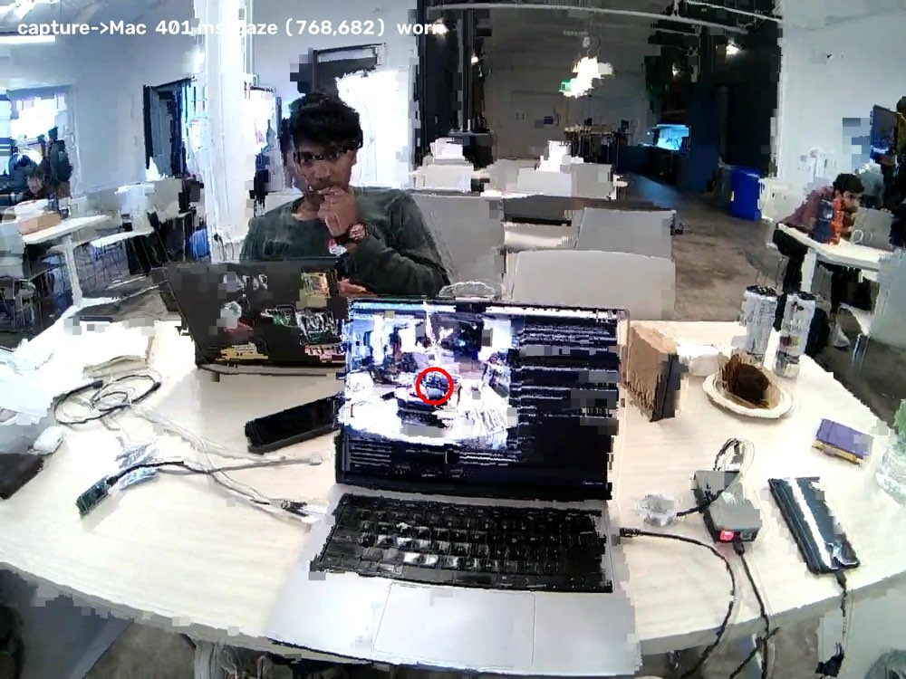
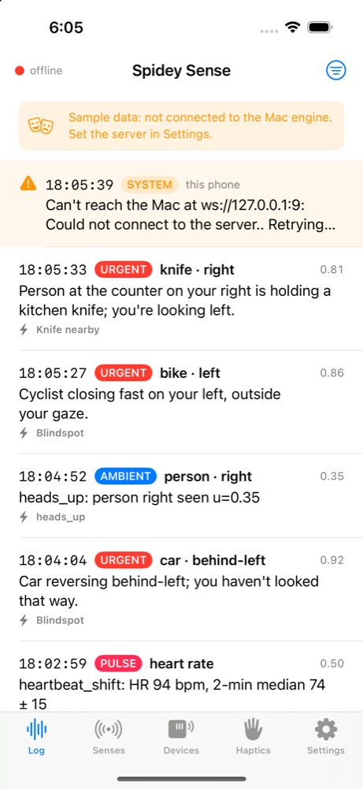
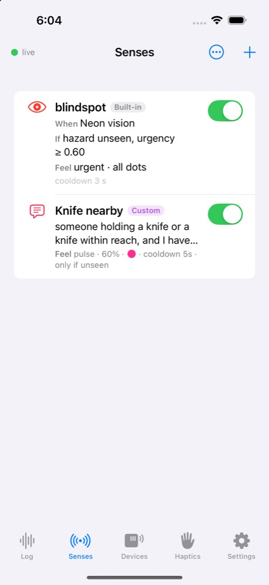
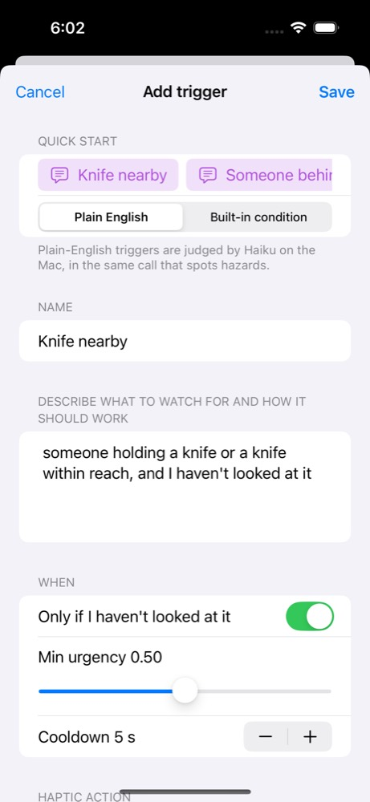
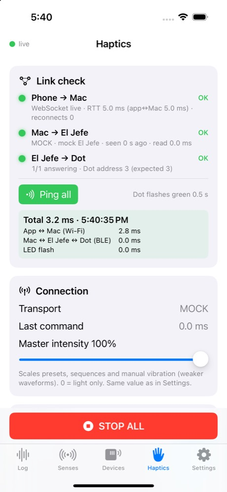
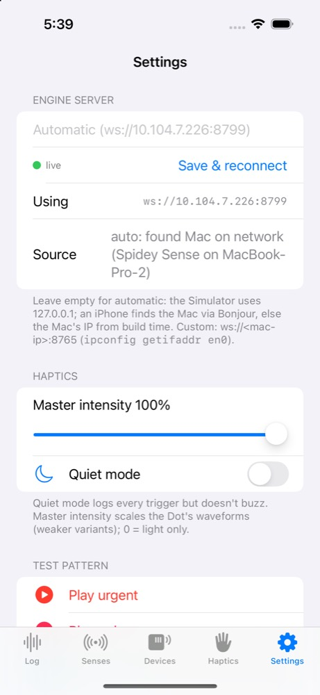

Interface Hackathon · Oct 2026 · Jaidev
Spidey
Sense
Feel the things you haven't seen.

The problem
We only notice
what we look at.
The dangerous thing is usually the one outside your attention.
The blind spot
A bike closing in on your left while you watch the road ahead.
Behind you
Someone walking up from behind, where no eye can see.
Near the water
A child drifting toward the pool edge while you look away.
The idea
A spidey sense you can wear.
Hands-free. No screen to check. You just feel it.
Glasses watch your gaze
Eye-tracking glasses see the scene and exactly where you're looking.
AI spots the unnoticed
A vision model finds hazards, and checks whether you've looked at them.
A dot on your skin
Vibration pattern + coloured light + warmth tell you what and how urgent.
Why attention-aware
Already looking at it? Stay quiet.
An alert for everything is an alert for nothing. Gaze lets us only speak up for what you missed.
Illustrative: 10 detections, 3 buzzes. The other 7 you'd already seen.
Demo moments
Five things to feel.
Look at a big cat
Gaze lands on the cat picture → buzz. A trigger that fires because you looked.
The lion you missed
A lion is in view but you haven't looked → buzz. Look at it → silence.
Getting closer to water
Someone drifts toward the water over a few seconds. Buzz only if you're not watching.
Someone behind you
Radar sees a person walk up from behind, where the glasses can't.
Every buzz shows up on the phone with why it fired, so the room can see what the Dot just told me.
Who it's for · where it goes
Anyone whose eyes can't be everywhere.
Oura heart rate as a trigger source
App talks to the Dot over Bluetooth directly
Any sensor can feed the same triggers
Part 2 · How it works
The kit.
Everything on the body is wireless. The MacBook is the brain.
Architecture
Source → detector → triggers → haptics.
The detector
One Haiku call per tick. Everything in it.
+ 3 labelled frames for temporal triggers
+ built-in hazards and every plain-English trigger
triggers · bbox · why → follows
Frame → cue 0.92 s median, 1.20 s p90 (was 1.28 s). ~3 results/s, 125/125 correct on test scenes.
Attention model
"Seen" comes from your real gaze.
Engine checks when the gaze point last fell inside the object's box → looked_at_s_ago.
Temporal layer
Change over time, not one snapshot.
3 labelled frames in the same Haiku call. Code keeps the trend; only relative signals, no metres from a camera.
Fires on a consistent trend for ≥ 3 ticks (or touching) · hysteresis + cooldown so it doesn't chatter.
Haptic vocabulary
How urgent, felt without looking.
Triple click + strong buzz. Red.
Heartbeat double clicks. Pink.
Soft hum. Blue.
Reverse-engineering win
Cutting the cable: 361 → 117 ms.
The iPhone app
See why it buzzed. Teach it new senses.





Measured
The numbers.
| Dot trigger over Bluetooth (fastfire) | 117 ms | median, 150 ms worst · stock SDK 361 ms · USB 48 ms |
| App → Mac → Dot link ping | ~60 ms | El Jefe health read ~60 ms |
| Haiku frame → cue (test scenes) | 0.92 s | median · 1.20 s p90 · ~3 results/s |
| Neon over phone hotspot | 130 Hz gaze | scene+gaze 1600×1200 @ 9–18 fps matched |
| Glasses capture → Mac | 110–150 ms | median (hotspot spikes to ~1 s p90) |
| Glasses capture → cue, end to end | 1.6 s | median, 1.9 s p90 · before the Haiku speed-ups; re-measure: TBD |
| Radar: person behind → buzz | TBD | not yet measured |
| Temporal trigger: approach → buzz | TBD | not yet measured |
What's next
Thank
you.
Spidey Sense · Jaidev
Pupil Labs Neon · DataFeel
Infineon · Claude Haiku